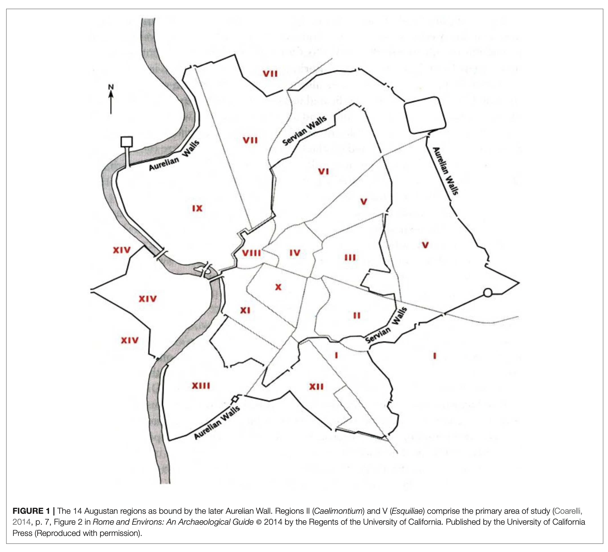
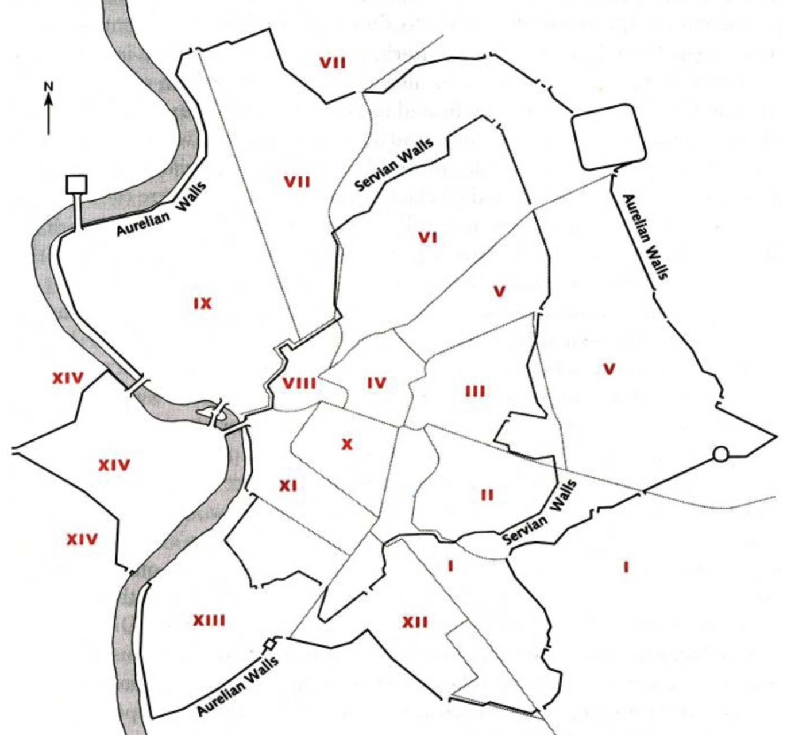

San Francisco · exact vector layer
The site streams Mapping Inequality HOLC polygons from a PMTiles archive. Each area can be hovered and clicked, and the original A/B/C/D grade and label are read from the vector feature.
Explore 14 regions of Augustan Rome alongside the 1937 HOLC grading framework used in San Francisco. The visual design remains the same as the original prototype; only the map engine has been upgraded to GIS.


The live polygon layer is an approximate digitization of this figure, georeferenced with the paper’s Rome bounding box.
Filter one HOLC-style grade across both cities. Rome uses the current scoring model; San Francisco uses the original HOLC vector polygons.
Source integrity: the SF Pct values below are reproduced exactly as printed in Table 4. They are a different series from the graded-footprint shares shown in Explore (8.65%, 31.32%, 24.97%, 35.06%); this site does not silently reconcile the paper’s two series.
| Grade | SF Pct | Rome normalized | Normalized diff. | Rome size-agnostic | Agnostic diff. |
|---|---|---|---|---|---|
| A | 13.54% | 14.29% | +0.74% | 28.57% | +15.03% |
| B | 31.25% | 7.14% | −24.11% | 21.43% | −9.82% |
| C | 27.08% | 7.14% | −19.94% | 7.14% | −19.94% |
| D | 17.71% | 71.43% | +53.72% | 42.86% | +25.15% |
Use the live maps for exploration; use this short story mode for presentation or defense.
This version deliberately separates original GIS data from paper-derived interpretation.
The site streams Mapping Inequality HOLC polygons from a PMTiles archive. Each area can be hovered and clicked, and the original A/B/C/D grade and label are read from the vector feature.
The uploaded paper includes the 14-region figure, but not the original GIS polygon file. This site digitizes that figure into GeoJSON and georeferences it with the paper’s stated Rome bounding box. Treat the boundaries as presentation-grade, not surveyed GIS geometry.
Positive/negative counts, area, net investment score, normalized score and both HOLC-style grades are copied from the paper’s tables. Switching scoring method changes both map grades and the regional ranking.
The paper uses Pleiades place coordinates for its archaeological dataset. Pleiades publishes GIS-ready coordinates, but the uploaded DOCX does not contain the paper’s exact 383-row working extract, so this version does not invent those point records.
data/rome-regions.geojson so it can be refined later in QGIS or another GIS editor.